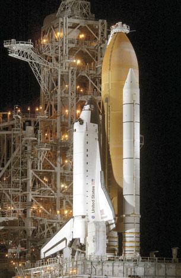

Module 6—Stoichiometry
Lesson 3—Gas Stoichiometry
 Get Focused
Get Focused

Photo courtesy Kennedy Space Center/NASA
The hydrogen and oxygen that power the main engines of the Space Shuttle during launch are placed into the large orange external fuel tank mounted to the shuttle (as seen in this photo). The white ring that appears at the top of the external fuel tank is used to transfer hydrogen and oxygen (as liquids) into the tank.
In Lesson 2 you discovered that stoichiometry can be used to predict the mass of each of these substances that needs to be placed into the external fuel tank. During the combustion of hydrogen and oxygen, the temperature of the main engines of the shuttle can exceed 3300°C. At these conditions, the water produced by the reaction would exist as a gas. As you may recall from your study in Module 4, gases may fluctuate in volume in response to the temperature and pressure at which they are contained.
Predicting the quantity of a gas that is involved in a chemical reaction must still involve the number of moles of substance; but, in this case, the number of moles will be measured using the pressure, volume, and temperature of the gas. Can you recall a relationship that includes these four variables? How would you use this relationship when predicting the quantity of a gaseous substance involved in a chemical reaction?
In this lesson you will use stoichiometry to predict the quantities of substances in chemical reactions that involve gases.
Essential Questions
-
How is the stoichiometric method applied to reactions that involve gases?
 Module 6: Lesson 3 Assignment
Module 6: Lesson 3 Assignment
You will complete the Module 6 Assignment 3 in this lesson.
Remember that the questions that are not marked by the teacher provide you with the practice and feedback that you need to successfully complete this course. You should respond to all the questions and place those answers in your course folder.